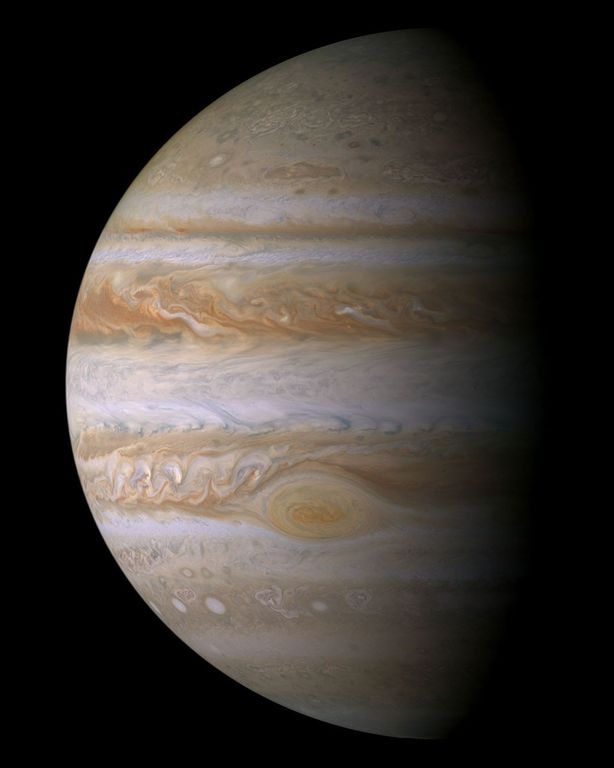
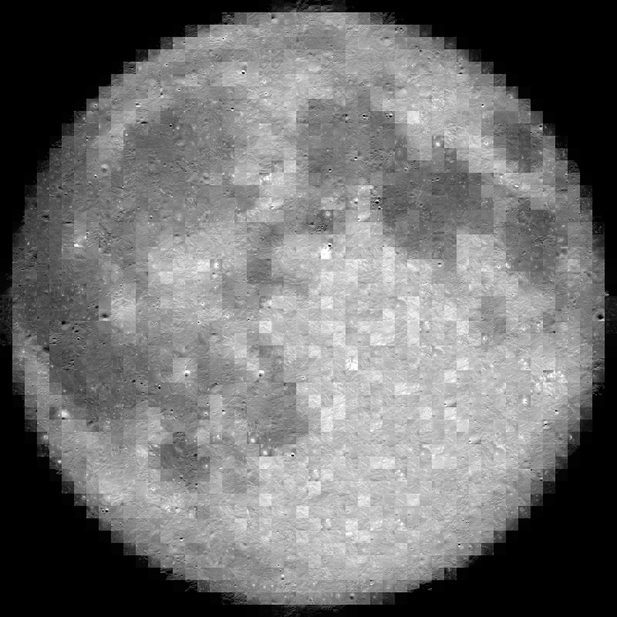

REFERENCE IMAGE / NOT A LIVE FEEDCENTER RETICLEOverlay alignment test

REFERENCE IMAGE / NOT A LIVE FEEDTest image loaded. Toggle the crosshair, grid, and frame to test the camera overlays.
Find a target for your next observation.
Estimated positions for catalog objects. Visibility depends on darkness, weather and your surroundings.
Predicted catalog positions for your observer site and time.
Center is overhead. The outer circle is the horizon. Browse the target list for coordinates.
Switch to red light for low-light observing.
Set your coordinates and observation time to personalize sky predictions.
No telescope or camera connected. Upload photographs from Observe.
Describe a problem and export a local diagnostic report.
Review a sky image alongside your selected target.

Choose a target from Explore.
Your selected target is a viewing reference. Image identification and telescope control are unavailable in this prototype.
Browse images added in this session.
Images are kept in this browser session. Export important previews before reloading.